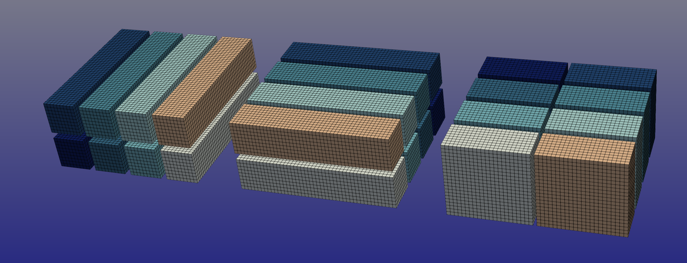

dtFFT
dtFFT - DataTyped Fast Fourier Transform


DataTyped Fast Fourier Transform (dtFFT) is a high-performance library for parallel data transpositions and optional Fast Fourier Transforms (FFTs) in multidimensional computing environments.
Initially designed for zero-copy transpositions using custom MPI datatypes on CPU clusters, it has evolved to support GPU acceleration by compiling CUDA kernels at runtime with nvrtc.

Features
- R2C, C2C, R2R transforms are supported
- Single and double precision
- Fortran, C and C++ interfaces
- 2D and 3D transposition plans
- Slab and Pencil decompositions
- Host and CUDA versions
- Can be linked with multiple FFT libraries simultaneously or with no library at all. Execution library can be specified during plan creation. Currenly supported libraries are:
- FFTW3
- MKL
- cuFFT
- VkFFT
- CUDA version supports different backends for data exchange:
- MPI
- NCCL
- cuFFTMp
Usage
Basic usage of dtFFT consists of 6 steps:
- Create and set config to dtFFT (optional)
- Create plan
- Obtain local sizes in “real” and “Fourier” spaces
- Allocate memory
- Execute plan via dtfft_execute or dtfft_transpose as many times as you want
- Destroy plan
Plan creation
Fortran
3 Derived types are available in fortran interface: dtfft_plan_c2c_t, dtfft_plan_r2c_t and dtfft_plan_r2r_t. To create plan one have to call create method.
Users can provide two kinds of communicators. Without grid topology, e.g. MPI_COMM_WORLD and with created cartesian topology. dtFFT will handle both of such cases and create needed internal communicators.
Plan creation subroutines have two common arguments:
- effort_flag - Three options are possible:
- DTFFT_ESTIMATE - Will create plan as fast as possible.
- DTFFT_MEASURE - Only make sense in 3D plan and MPI Communicator without attached cartesian topology. In such cases dtFFT will allocate temporal memory and run transpose routines to find the best grid decomposition.
- DTFFT_PATIENT - most time consuming flag. It does same job as DTFFT_MEASURE plus will test different MPI Datatypes. In case of 3d plan, plan creation will take 8 times longer then passing DTFFT_MEASURE flag.
- executor_type - this argument specifies which external library should be used to create and execute 1D FFT plans. Default value is DTFFT_EXECUTOR_NONE which means that FFTs will not be executed.
Execution
When executing plan via dtfft_execute method user must provide execute_type argument. Two options are available: DTFFT_TRANSPOSE_OUT and DTFFT_TRANSPOSE_IN. First one assumes that incoming data is aligned in X direction (fastest) and return data aligned in Z direction.
All plans, except those created without FFT support, require additional auxiliary buffer. This buffer can be passed by user to execute method. If user do not provide such buffer during the first call to execute, necessary memory will be allocated internally and deallocated when user calls destroy method.
Warning
dtfft_execute almost always overwrites buffer in. If user requires to keep original values, he should copy them somewhere else.
When executing plan dtfft_transpose method user must provide transpose_type argument. There 6 valid values that user can provide:
- DTFFT_TRANSPOSE_X_TO_Y - Transpose from Fortran X aligned to Fortran Y aligned
- DTFFT_TRANSPOSE_Y_TO_X - Transpose from Fortran Y aligned to Fortran X aligned
- DTFFT_TRANSPOSE_Y_TO_Z - Transpose from Fortran Y aligned to Fortran Z aligned
- DTFFT_TRANSPOSE_Z_TO_Y - Transpose from Fortran Z aligned to Fortran Y aligned
- DTFFT_TRANSPOSE_X_TO_Z - Transpose from Fortran X aligned to Fortran Z aligned (only possible with 3D slab decomposition when slab distributed in Z direction)
- DTFFT_TRANSPOSE_Z_TO_X - Transpose from Fortran Z aligned to Fortran X aligned (only possible with 3D slab decomposition when slab distributed in Z direction)
Starting from DTFFT_TRANSPOSE_Y_TO_Z plan has to be in 3D. Both DTFFT_TRANSPOSE_X_TO_Z and DTFFT_TRANSPOSE_Z_TO_X requires that Z-slab optimization is enabled. To check one should call dtfft_get_z_slab_enabled in C and plan%get_z_slab_enabled in Fortran.
Warning
dtfft_transpose behaves differently in host and CUDA library builds. In a host build buffer in remains untouched by dtFFT. CUDA version almost always (for the exception of running on a singular GPU) overwrites this buffer. If user requires to keep original values, he should copy them somewhere else.
For more detaled examples check out tests provided in tests/fortran folder.
Building library
To build this library modern (2008+) Fortran compiler is required. This library successfully builds with gfortran-7 and above, ifort-18 and above. Currenly library can only be build using CMake. List of Cmake options can be found below:
| Option | Possible values | Default value | Description |
|---|---|---|---|
| DTFFT_WITH_CUDA | on / off | off | Build dtFFT with CUDA support. This options requires Nvidia HPC SDK compilers for both C/C++/Fortran. Make sure that nvcc compiler for correct CUDA version is in PATH |
| DTFFT_CUDA_CC_LIST | Valid CUDA CC list | 70;80;90 | List of CUDA compute capabilities to build CUDA Fortran against |
| DTFFT_WITH_FFTW | on / off | off | Build dtFFT with FFTW support. When enabled user need to set FFTWDIR environment variable in order to find FFTW3 located in custom directory. Both single and double precision versions of library are required |
| DTFFT_WITH_MKL | on / off | off | Build dtFFT with MKL DFTI support. This option requires MKLROOT environment variable to be set |
| DTFFT_WITH_CUFFT | on / off | off | Build dtFFT with cuFFT support. This option automatically enables DTFFT_WITH_CUDA |
| DTFFT_WITH_VKFFT | on / off | off | Build dtFFT with VkFFT support. This options requires to set additional configuration parameter VKFFT_DIR that points to vkFFT.h. This option automatically enables DTFFT_WITH_CUDA |
| DTFFT_BUILD_TESTS | on / off | off | Build tests |
| DTFFT_ENABLE_COVERAGE | on / off | off | Build coverage of library. Only possible with gfortran |
| DTFFT_BUILD_SHARED | on / off | on | Build shared library |
| DTFFT_USE_MPI | on / off | on | Use Fortran mpi module instead of mpi_f08 |
| DTFFT_BUILD_C_CXX_API | on / off | on | Build C/C++ API |
| DTFFT_ENABLE_PERSISTENT_COMM | on / off | off | In case you are planning to execute plan multiple times then it can be very beneficial to use persistent communications. But user must aware that such communications are created at first call to execute or transpose subroutines and pointers are saved internally inside MPI. All other plan executions will use those pointers. Take care not to free them. |
| DTFFT_WITH_PROFILER | on / off | off | Enable library profiler. If DTFFT_WITH_CUDA is enabled then library will use nvtx3 library, otherwise caliper will be used and additional option may be required: caliper_DIR |
| DTFFT_WITH_CUSTOM_NCCL | on/off | off | Use custom NCCL build instead of provided with HPC-SDK. Where enabled user need to set NCCL_ROOT environment variable in order to find NCCL located in custom directory. |
During configuration one should set CMAKE_INSTALL_PREFIX with desired installation prefix. dtFFT can later be used in cmake configuration with following commands:
find_package(dtfft)
add_executable(my_prog my_prog.c)
target_link_libraries(my_prog PRIVATE dtfft)
Provided cmake target will add include directories and link all libraries. Make sure to point CMake to the desired dtFFT installation with dtfft_DIR when configuring the target program:
cmake -Ddtfft_DIR=<dtfft-installation-dir>/lib[64]/cmake/dtfft ..
Besides target dtfft cmake installation provides additional variables:
- DTFFT_WITH_CUDA
- DTFFT_WITH_C_CXX_API
- DTFFT_WITH_MPI_MODULE
Useful runtime environment variables
| Name | Possible values | Default value | Description |
|---|---|---|---|
| DTFFT_ENABLE_LOG | 0 / 1 | 0 | Make dtFFT write useful info |
| DTFFT_MEASURE_WARMUP_ITERS | non negative integer | 2 | Number of warmup iterations to run before plan testing when passing DTFFT_MEASURE or DTFFT_PATIENT to effort_flag parameter during plan creation |
| DTFFT_MEASURE_ITERS | positive integer | 5 | Number of iterations to run in order to find best plan when passing DTFFT_MEASURE or DTFFT_PATIENT to effort_flag parameter during plan creation |
| DTFFT_FORWARD_X_Y | 1 / 2 | 2 | Default id of transposition plan for X -> Y transpose which will be used if plan created with DTFFT_ESTIMATE and DTFFT_MEASURE effort_flags |
| DTFFT_BACKWARD_X_Y | 1 / 2 | 2 | Default id of transposition plan for Y -> X transpose which will be used if plan created with DTFFT_ESTIMATE and DTFFT_MEASURE effort_flags |
| DTFFT_FORWARD_Y_Z | 1 / 2 | 2 | Default id of transposition plan for Y -> Z transpose which will be used if plan created with DTFFT_ESTIMATE and DTFFT_MEASURE effort_flags |
| DTFFT_BACKWARD_Y_Z | 1 / 2 | 2 | Default id of transposition plan for Z -> Y transpose which will be used if plan created with DTFFT_ESTIMATE and DTFFT_MEASURE effort_flags |
| DTFFT_FORWARD_X_Z | 1 / 2 | 2 | Default id of transposition plan for X -> Z transpose which will be used if plan created with DTFFT_ESTIMATE and DTFFT_MEASURE effort_flags in case Z-slab optimization is used |
| DTFFT_BACKWARD_X_Z | 1 / 2 | 2 | Default id of transposition plan for Z -> Y transpose which will be used if plan created with DTFFT_ESTIMATE and DTFFT_MEASURE effort_flags in case Z-slab optimization is used |
Notes for C/C++ users
dtFFT provides headers for both C and C++. Simply
// C header
#include <dtfft.h>
// C++ header
#include <dtfft.hpp>
Since C arrays are stored in row-major order which is opposite to Fortran column-major when creating the plan, user should pass the dimensions of the array to the planner in reverse order. For example, if your array is a rank three N x M x L matrix in row-major order, you should pass the dimensions of the array as if it were an L x M x N matrix. Also if you are using R2R transform and wish to perform different transform kinds on different dimensions then buffer kinds should also be reversed. Same goes for MPI Communicators with attached cartesian topology.
Examples are provided in tests/c folder.
Next Steps
- Support effort_flag optional argument.
- Support more 1D FFT executors. ESSL, FFTPACK?
- Added VkFFT and CUFFT
- Use different tools to build project: autotools, CMake?
- Cmake is only build system supported
- Add more interfaces: C++, Python?
- C++ was added
- Add CUDA Support
- Optimize CUDA NVRTC kernels
- Add support for nvshmem
- Add support for custom NCCL installation
- Create documentation web page
- Add HIP Support
Contribution
You can help this project by reporting problems, suggestions, localizing it or contributing to the code. Go to issue tracker and check if your problem/suggestion is already reported. If not, create a new issue with a descriptive title and detail your suggestion or steps to reproduce the problem.
Licensing
The source code is licensed under GPL v3. License is available here.